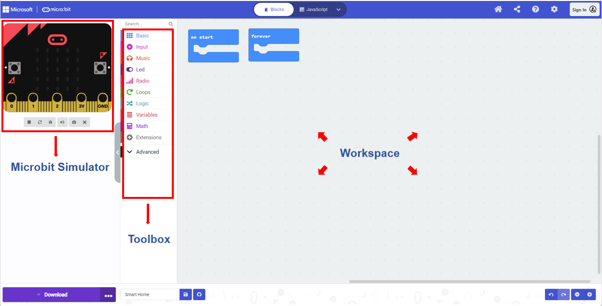
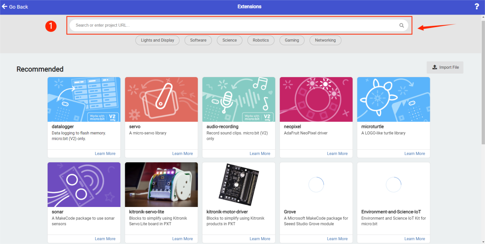
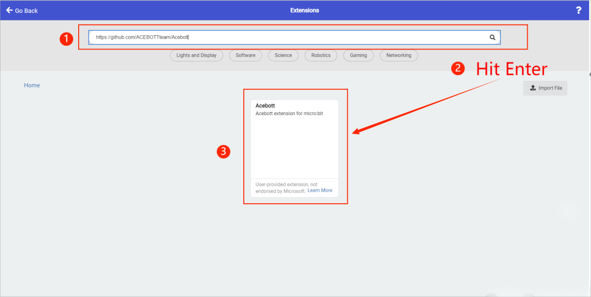
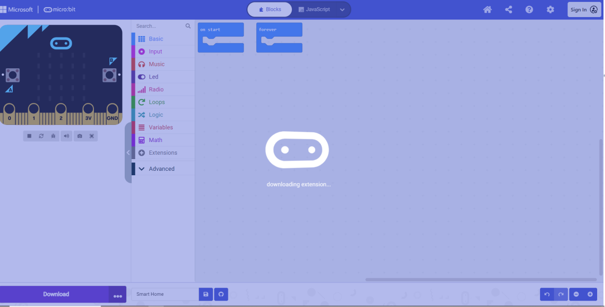
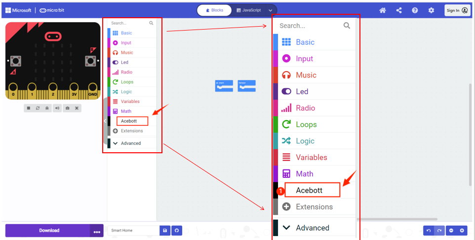

How to add Acebott library to MakeCode
Step 1
Open Microsoft MakeCode: https://makecode.microbit.org/.
Step 3
When you click Create, you will enter the graphical programming interface.
The operation interface is mainly divided into three parts, namely Microbit Simulator、Toolbox、Workspace.

Step 5
Copy the URL into the search box and press Enter on your keypad to see the Acebott extension appear.


Step 6
Click Go Back to the main interface, and you can see the Acebott extension appears. Click the relevant blocks with Acebott module, so the addition of the extension is completed.

